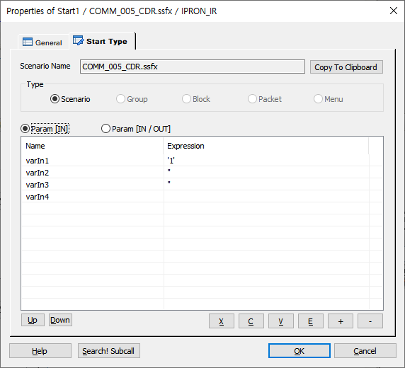

개별 서비스 시나리오 파일의 시작 지점을 나타내는 Item이다. 모든 시나리오 파일의 서비스 흐름의 시작은 이 Item부터 시작된다. 단, Global.SSFX는 서비스 흐름과 관계없이 전역 변수 정의를 위한 것이므로 Start Item을 시작으로 하는 흐름지시자를 지정하지 않아도 된다.(단, DefineMenu Item은 지정하여야 함)
시나리오 파일이 Subcall으로 호출될 때 전달 되는 인자정보는 본 Start Item에서 지정하게 되는데 이때 Call by Reference와 Call By Value의 두 종류로 나누어 지정할 수 있다. Call by Reference는 호출 인자와 참조인자가 같은 데이터를 공유하여 Subcall호출후 해당 참조 인자 변수의 값을 변경하는 경우 호출시 사용한 인자의 변수 값도 같이 변경된다. Call by Value는 호출 인자와 참조인자가 서로 다른 데이터를 공유하고 단지 값만 넘겨받음으로 참조인자의 변수값을 변경하여도 이전 시나리오 파일로 복귀후에는 원래의 값을 유지하게 된다.
Start Item은 시나리오 생성시 자동으로 추가 되며, 복사, 삭제가 불가능 합니다.
ICON
PROPERTIES
 Start Type
Start Type
Scenario Name : 현재 시나리오의 이름을 표시 합니다.
Type
시나리오의 Type을 지정하며 현재는 "Scenario" Type 만을 지원합니다.
Scenario

Scenario Name : 현재 시나리오의 파일 이름을 표시 합니다.
Copy To Clipboard Button : Scenario Name 에 있는 시나리오 이름을 복사합니다.
Param [IN] : 입력 파라미터를 추가, 삭제, 수정 할 수 있습니다. Call by Value방식 이므로 호출한 SubCall, UserCall Item의 파라미터에서 값만 넘겨 받습니다.
Param [IN/OUT] : 입력 출력 파라미터를 추가, 삭제 수정 할 수 있습니다. Call by Value, Call by Reference 모두 가능 합니다.
Search! Subcall Button : 이 Start 아이템이 포함된 시나리오 파일을 호출한 아이템을 검색 하여 출력 합니다.
Block
현재는 이 타입을 지원하지 않습니다.
Packet
현재는 이 타입을 지원하지 않습니다.
Menu
현재는 이 타입을 지원하지 않습니다.
RELATED